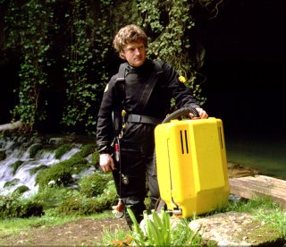
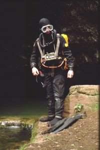
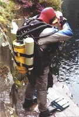
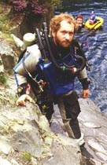

|
|
CONCLUSION - REG VALLINTINE
That’s just about the end of the story, but as divers we have to remember how much we owe to such pioneers as the Deanes and the development of their closed apparatus.
What of the future? Well that I think lies with space age computer electronics combined with autonomous apparatus and for this we go across and have a look at Rob Palmer somewhere under the Mendip Hills.
WOOKEY HOLE & THE FUTURE - ROB PALMER
Technical Diving International
We’re here now in Wookey Hole: the birth place of cave diving and the oldest diving club in the world - the British Cave Diving Group. And what we’re going to do today is to try out some of the latest diving equipment in one of the earliest diving sites.
The story of Wookey Hole is really the story of diving in Britain. They started out here with the old huge bellows and brass helmets
1935
and yards and yards of umbilical cable to feed the divers. And then they moved to simple rebreathers, mechanical units
1949-55
that allowed you to preset the depth you were going to. Those were very limited in terms of depth. And now we’ve come full circle and today we’ve got units that will allow us to go further and deeper than ever before; where we’re not limited by depth, because the unit will automatically compensate that and where we’re not limited by distance because we’ve got over ten hours of available gas within a backpack sized unit.
REBREATHER FUTURE: DRAEGER - ROB PALMER

This is a prototype rebreather made by a German company called Draeger who actually made some of the very earliest rebreathers down around the turn of the century.There are probably going to be more advances in the next five years than the last fifty and by the end of the century we’re probably going to be using helmet systems that work on a virtual reality basis: that’ll work even in the murkiest of waters with a full computer image of what’s around you. Breathing systems like a rebreather, but which will be working on liquid gas rather than condensed gas and an access to the world below the waves that beats anything we’ve ever had before.
Let’s have a look inside. The inside of a rebreather hasn’t in many ways changed very much since the early days: there are still two cylinders of gas. One, this blue one over here, of oxygen and the grey one, over here, containing in this case air, but it could be helium or nitrogen or whatever you want to mix with it.
There’s a box full of sodabsorb here, essentially sodium hydroxide that cleans out the exhaled carbon dioxide from your breathing gas. There’s a set of what look like old fashioned diver’s hoses, Jacques Cousteau stuff, up at this end. You add your lungs to this, it’s a closed circuit loop and as you breathe out your exhaled gas is cleaned here. It then passes into a counter lung which contains a couple of lung fulls of air and you simply breathe in the other side.

The thing that makes this system unique is this computer control module over here and this, every couple of seconds of the dive, actually analyses the gas that you’re breathing and, if necessary, injects a little bit more oxygen or a little bit more helium into the mixture to actually make it the perfect breathing mix for the depth that you’re at.The concept is fairly simple, but it’s this mixture of electronics, of computer technology with existing diving technology that allows us to take that step forward or finstroke forward into the future. In open water diving as in cave diving there’s this search for spending more time beneath the sea. More time below the water, is really where we’re trying to get to. Unincumbered by umbilical cables, unincumbered by connections to the surface, but just the ability to swim free in the water for hours and hours on end at any depth we want. That’s what modern day rebreathers will allow us to do.
REBREATHER FUTURE: CIS LUNAR - IAN ROLLAND
Jackson Blue, Florida, USA
CIS LUNAR Mark 4: Fully redundant closed-circuit mixed gas rebreather designed by Bill Stone.
Controlled by 3 on-board computers with internal back-up systems to sustain a diver for
up to 16 hours. Developed for Huautla Project, Oaxaca, Mexico and used in the San Agustín cave exploration of 1994.
DIVERS
("How’s that rig going?") "Real good. Just finish this oxygen callibration and we should be set for a big dive tomorrow." ("Final check here: you’ve got a... what’s the spread on those O2 sensors?") "Oh they’re all in close agreement, they’re all at point 2." ("Made contact with the whale yet?")
IAN ROLLAND
"And it should have ‘O2 injector has been disabled’." ("Yep." "So Ian, give me some spiel on your two students.") "They did very well indeed: a good hour’s dive and I think we’ll go and have a cup of coffee!"
IAN ROLLAND, BEM FRGS RAF (1964-1994)
REBREATHER FUTURE: SPORTS SET - ROB PALMER
PRISM prototype

A more simple rig designed for the sport diver (by Peter Readey) is this prototype semi-closed mixed gas rebreather. This is a redesign of the military rig using modern principles and technology.
Duration of the gas supply may be constant irrespective of depth, but this will vary depending on the % of oxygen in the breathing mix.With 32% oxygen, a flow rate of 13 litres/minute will give 46 minutes supply from a 3 litre cylinder at 200 bars. With 100% oxygen, limiting the depth to 6m, the same volume will last up to 200 minutes. Maximum depth so far - 122 metres.
|
|